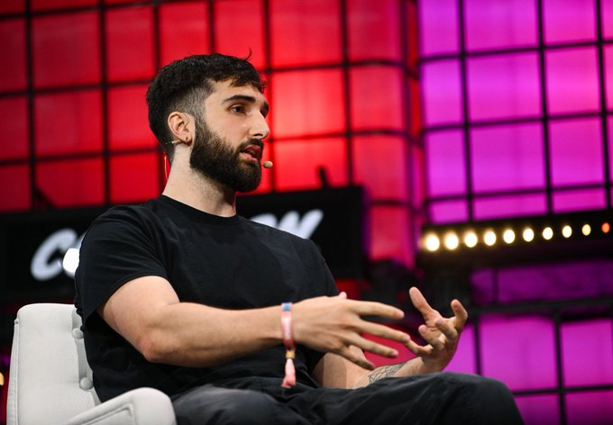
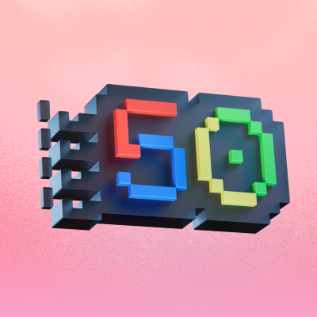

Elon Musk
@elonmusk · 6h
From DogeDesigner
3.6K
17K
62K
1.2M

Delhi Police
@DelhiPolice · 3h
Your safety is our top priority. Report any suspicious activity immediately. Dial 112 🚨
830
3.2K
9.5K
200K
Thakur Aaditya singh
@thakuraadi
Merging the wonders of biotechnology with the power or AI
3.6K
17K
62K
1.2M

Narendra Modi
@narendramodi · 1h
India stands united for development and progress. Together, we will build a stronger nation. 🇮🇳
9.6K
45K
102K
5.1M
TechCrunch
@TechCrunch · 2h
OpenAI announces GPT-5 with breakthrough capabilities in multimodal understanding

2.4K
15.2K
45.8K
1.2M

SpaceX
@SpaceX · 4h
Starship launch preparations underway at Starbase 🚀

5.2K
25.1K
142.8K
2.8M

Microsoft
@Microsoft · 5h
Introducing the next generation of Windows AI features. Experience the future of computing today.
3.1K
12.4K
35.2K
892K

Netflix
@netflix · 8h
Your weekend binge-watch is here! The new season of Stranger Things drops NOW! 🎬
15.3K
45.6K
221.5K
4.2M